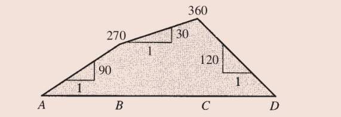
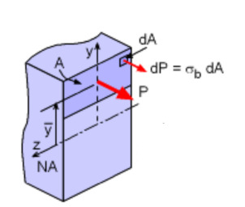
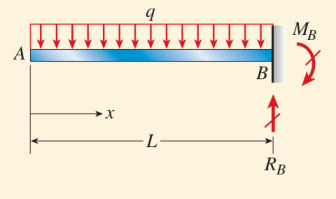
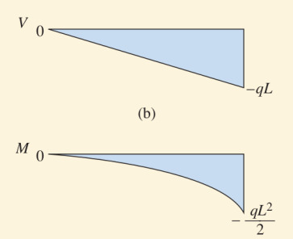
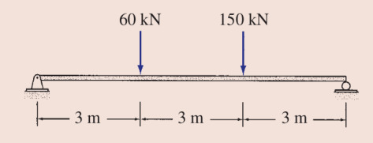

Cauchy Stres Tensörü
Gerilme tensöründen stres tensörlerine geldik. İlk önce çekiş (traction) ya da stres vektöründen bahsedeceğiz. Diyelim ki elimizde bir çubuk var, onu ortadan kestiğimizi düşünelim, ve iki parça ortaya çıkıyor. Şimdi belki lisans seviyesi Statik dersinden hatırlayanlar olabilir, bir nesneyi (sanal olarak) kesince onun iç kuvvetlerini serbest bırakmış oluyoruz.
Kesit düzleminden bahsedelim önce, kesit tam dik olabilir ama bu şart değil, nasıl olursa olsun o düzleme dik olan bir $\vec{n}$ vektörü ile bu kesitin duruşunu temsil edebiliriz.
Bu serbest bırakılmış iç kuvvetler darmadağın gözüküyor. Bir $\Delta A$ alanı tanımlayıp o alandaki tüm kuvvetleri alıp toplarsak bir $\Delta F$ elde edebiliriz, bu tek vektör daha derli toplu.

$\vec{n}$ ile tanımlı bir nokta etrafındaki düzlemin çekiş vektörünü (yani bir noktadaki stres vektörü) şimdi şöyle tanımlıyoruz,
$$ t_n = \lim_{\Delta A \to 0} \frac{\Delta F}{\Delta A} $$
Newton'un hareket kanunu üzerinden tabii ki sol taraftaki çekiş ile sağ taraftaki birbirini dengelemeli, $t_n = -t_{-n}$.
Çekiş vektörü için formel tanım böyle. Ama kimse formel tanımı pek sevmiyor sözel şekilde anlatırsak, çubuğu aldım ve kestim, Statik dersi der ki kaykılma (shear), normal kuvvet ve eğilme momentimi böylece elde ederim. Bu üç boyutlu nesnelerde olan şudur, çubuğu kesiyorum ve bileşenleri stres öğeleri olan tek bir vektör elde ediyorum.
Şimdi çekiş vektörü kavramını daha basitleştirmeye uğraşalım. Bunun için patatesimize geri dönüyoruz. Patatesten üç boyutlu sonsuz küçük küp şeklinde bir parça çıkarttığımızı düşünelim şimdi,

Bu ufak parça nesnenin bütünlüğünden çıkartıldığı için çekiş vektörlerinin bu küpün yüzlerine etki eden stres vektörleri olduğunu söyleyebiliriz.
Küp sekli iyi bir seçim aslında çünkü her yüz kordinat eksendeki bir baz düzleme paralel. Ayrıca $t_{e_1}$, $t_{e_2}$, $t_{e_3}$ yerine de daha iyi bir temsil şekli bulabiliriz, küpün her yüzündeki bu $t$ çekiş vektörlerini de üç parçaya ayırabiliriz,

Bu şekildeki temsilin iyi bir tarafı her yüzdeki üç vektörün orijindeki baz vektörlerle birebir uyuşması. O zaman mesela $t_{e_3}$'u o baz vektörlerin lineer bir kombinasyonu olarak yazabilirim,
$$ t_{e_3} = \sigma_{31} e_1 + \sigma_{32} e_2 + \sigma_{33} e_3 $$
Üsttekini herhangi bir yüzey için yazarsak, yani $e_i$'in dik olduğu bir yüzey için
$$ t_{e_i} = \sigma_{ij} e_j $$
Einstein notasyonu kullandık, bu notasyonla her $i$ için mümkün tüm $j$'lerin üç tane terimi ortaya çıkardığı kabul edilir.
Küpün yüzlerindeki çekiş vektörünü gösterebiliyoruz, fakat acaba herhangi bir yöne bakan bir yüzey için stres vektörü ne olurdu? Bu ifadeyi genel bir şekilde yazmak mümkün, hem bunu göstermek (ve ileride ispat etmek) için Cauchy Stres Tetrahedon'u denen bir kurguyu anlatmamız lazım.

Tetrahedon üstteki gibi tanıdık bir şekil. Cauchy Lemma'sı ve Cauchy Kanununa göre
$$ t_n = \sigma^T n $$
olarak belirtilebilir, detaylı olarak belirtirsek,
$$ \left[\begin{array}{ccc} t_{n1} \\ t_{n2} \\ t_{n3} \end{array}\right] = \left[\begin{array}{ccc} \sigma_{11} & \sigma_{21} & \sigma_{31} \\ \sigma_{12} & \sigma_{22} & \sigma_{32} \\ \sigma_{13} & \sigma_{23} & \sigma_{33} \end{array}\right] \left[\begin{array}{ccc} n_1 \\ n_2 \\ n_3 \end{array}\right] $$
Bu formüldeki $\sigma$ Cauchy stres tensörü olarak adlandırılır. Üstteki ifade şunu söylemiş oluyor aslında, üstünde kuvvet etkileri olan bir katı cisim bize verilince yönden bağımsız bir Cauchy stres tensörü $\sigma$ elde edebiliriz, yani öyle bir $\sigma$ vardır ki $n$ yönündeki $t_n$ elde etmek için $t_n = \sigma^T n$ yapılabilir.
Cauchy tensörü hakkında bazı ispatlar için [1, sf. 330].
Cauchy tensörünün bazı özellikleri,
1) $\sigma$ simetriktir, yani $\sigma_{ij} = \sigma_{ji}$.
2) Öyle bir kordinat sistemi vardır ki bu sistemde $\sigma$ köşegendir. Lineer cebirde köşegenleştirme vardır bildiğimiz gibi, burada o teknik uygulanır, bu şekilde asal stresleri (principle stresses) denen stres vektörleri elde edilebilir.
3) Feragat / teslim / esneme yüzeyi (yield surfaces) denen bir hesabı bu tensör üzerinden yapmak mümkün.
Normal ve Kaykılma Stresleri
Çekiş vektörü kavramının bir daha üzerinden geçelim, formülü gördük ama kavramsal olarak neyden bahsediyoruz? İki boyuttaki kütleye bakalım, onu herhangi bir düzlemle kestim diyelim,

Kesim yüzeyini normal vektörü ile tanımlıyoruz. Çekiş vektörü bir objenin iç streslerinin bir yüzeye yansımasıdır. Dikkat, bu iç streslerin, kuvvetlerin vektörsel bileşimleri illa ki yüzeyin normal vektörü ile aynı yönde olmayabilir, onun için üstteki şekilde farklı yöne bakan bir $t_n$ gösteriliyor. Muhakkak diğer parçada ona eşit dengeliyici reaksiyon var, vs.
Şimdi çekiş vektörünün bileşenlerine gelelim, $t_n$ daha önce belirttik stres tensörü çarpı $n$.

Bileşen bağlamında $t_n$'i alıp $n$ üzerine skalar olarak yansıtabilirim, $\sigma_n$ büyüklüğünü elde ederim, ona normal stres diyelim. Bu bir skalar büyüklük, hesabı
$$ \sigma_n = \mathrm{proj}_n t_n = \frac{t_n \cdot n}{||n||} $$
Üstteki hesap aslında daha da basitleşebilir çünkü $n$'nin norm'u 1'e eşittir yani $||n||=1$, o zaman geriye sadece $\sigma_n = t_n \cdot n$ kalıyor.
Yüzeye paralel olan bileşen kaykılma stresi (resimde kırmızı renkli $\tau_n$) için artık basit bir vektör çıkartım işlemi yeterli, resme göre
$$ t_n = \vec{\sigma}_n + \vec{\tau}_n $$
olduğuna göre basit bir tekrar düzenleme sonrası,
$$ \vec{\tau}_n = \vec{t}_n - \vec{\sigma}_n $$
elde edilir. Yanlız $\vec{\sigma}_n$ vektörü kullanıldı, daha önce $\sigma_n$ skalar demiştik, vektörü nasıl elde ediyoruz? Bu basit, $\vec{\sigma}_n$ yönsel olarak normal vektör $n$, ya da $\vec{n}$ ile aynı yönde olacağı için, eh $\vec{n}$ zaten birim vektördür o zaman $\vec{\sigma}_n$ için $\vec{n}$ ile $\sigma_n$ çarpılması yeterli,
$$ \vec{\tau}_n = \vec{t}_n - \sigma_n n $$
Asal Stresler
FEM programlarında karşımıza çıkan bir kavram bu. Eğer $\sigma$ simetrik ise stres tensörünün özvektörleriyle eş olan öyle bir kordinat sistemi vardır ki bu sistemde stres tensörü köşegen haline gelir (kaykılma stresi kalmaz). Bu bir köşegenleştirme operasyonu aslında. Daha önce üzerinde stres öğeleri olan küpü göstermiştik, köşegenleştirme ile yapılan bu küpü öyle bir çevirmek ki kaykılma bileşeni kalmasın.

$Q$ vektörü stres tensörünün özvektörlerinden oluşuyor, 1'inci özvektör $Q$'nun 1'inci satırına ikinci özvektör ikinci satırına, vs. Bu Lineer Cebirden bildiğimiz köşegenleştirme operasyonu tabii ki, yapmaya uğraştığımız $\sigma$'yi köşegenleştirip bir $\sigma'$ elde etmek,
$$ \sigma = \left[\begin{array}{ccc} \sigma_{11} & \sigma_{21} & \sigma_{31} \\ \sigma_{12} & \sigma_{22} & \sigma_{32} \\ \sigma_{13} & \sigma_{23} & \sigma_{33} \end{array}\right] \implies \sigma' = Q \sigma Q^T = \left[\begin{array}{ccc} \sigma_I & 0 & 0 \\ 0 & \sigma_{II} & 0 \\ 0 & 0 & \sigma_{III} \end{array}\right] $$
ki $\sigma_I$, $\sigma_{II}$, $\sigma_{III}$ $\sigma$'nin özdeğerleridir, elde edilen özdeğerler büyükten küçüğe doğru sıralanır, $\sigma_I > \sigma_{II} > \sigma_{III}$ olacak şekilde.
Alternatif anlatım; Giriş dersinden hatırlarsak kuvvet uygulanan çubuklardaki deformasyon maddenin özellikleriyle ilişkilendirilebiliyordu, bunun için birim alandaki kuvvet ve birim boya tekabül eden uzama gözönüne alınıyordu. Çok boyuta geçerken ilk olarak birim alan bazlı içsel kuvvetlerin alttaki gibi genel bir nesneye nasıl uygulanacağını görelim [3, sf. 184].

Bir $O$ noktasına etki eden iç kuvvetleri incelemek için o noktadan geçen bir düzlem hayal edebiliriz, düzlemi temsil eden ona dik normal vektör $n$ olsun. Eğer düzlemi ufak parçalara bölsek ve her bölgeye etki eden kuvvetleri ölçsek oradaki etki eden kuvvetlerin birinden diğerine değişebileceğini görürdük.

Eğer benzer şekilde $O$ merkezli bir ufak kare $\Delta A$ ele alsak orada etki eden bir $\Delta F$ olacaktır. $\Delta F$'nin düzleme dik olması gerekmez, herhangi bir açıda duran bir vektör olabilir, cismin altındaki kuvvetler üstten alta doğru bastıran kuvvetlerden daha büyükse $\Delta F$ onların tek bir noktadaki bir tür birleşimi olduğu için yukarı doğru gösteriyor olurdu muhakkak.
Şimdi stres vektörü kavramını tanıştıralım; eğer $\Delta A$ limite doğru giderse
$$ T_n = \lim_{\Delta A \to 0} \frac{\Delta F}{\Delta A} $$
büyüklüğü stres vektörünü tanımlar.
Dikkat edersek $\Delta F$ büyüklüğü düzlemin duruşuna, yani $n$'ye bağlı olduğu için özellikle $n$ ibaresini $T$ sembolüne ekledik; her değişik $n$ değişik bir $T_n$ değerini verebileceği için.
Herhangi bir düzlem kullanabiliriz demiştik, fakat tekrarlanabilirlik, net ifade açısından her eksene dik birer düzlem, toplam üç tane kullanmak daha iyi olacak. Örnek $x$ eksenine dik olan bir düzlem altta,

Daha önce gördüğümüz $\Delta F$'in üstteki resimde düzleme göre bileşenlerine ayıracağız, bunlar $\Delta F_x$, $\Delta F_y$, $\Delta F_z$. Baktığımız alan ise kenarları $\Delta y$ ve $\Delta z$ olan bir dikdörtgen, alan $\Delta A_x$ ise (notasyon olarak dik olduğumüz eksenin sembolünü verdik) $\Delta A_x = \Delta y \Delta z$.
Daha önce olduğu gibi burada da limit tekniğini kullanabiliriz, $\Delta A_x \to 0$ olacak. Fakat yine notasyonel olarak referans eksen yönündeki strese $\sigma$ sembolü üzerinden normal stres , o eksene dik yani düzleme paralel olan bileşenlere $\tau$ üzerinden kaykılma (shear) stresi adlarını vereceğiz. Limitlerle beraber,
$$ \sigma_x = \lim_{\Delta A_x \to 0 } \frac{\Delta F_x}{\Delta A_x} $$
$$ \tau_{xy} = \lim_{\Delta A_x \to 0 } \frac{\Delta F_y}{\Delta A_x} $$
$$ \tau_{xz} = \lim_{\Delta A_x \to 0 } \frac{\Delta F_z}{\Delta A_x} $$
Aynı düzlemle kesme tekniğini iki diğer eksen $y,z$ için de kullanırsak, ve benzer hesapları yaparsak oradan da altı tane stres değeri elde ederiz, toplam dokuz tane, hepsi bir arada bir matris içinde,
$$ \left[\begin{array}{rrr} \sigma_x & \tau_{xy} & \tau_{xz} \\ \tau_{yx} & \sigma_y & \tau_{yz} \\ \tau_{zx} & \tau_{zy} & \sigma_z \end{array}\right] $$
[atlandı]
Belirleyici Kanun (Constitutive Law), Stres-Gerilme İlişkisi
Şimdiye kadar stres tensörü $\sigma$ ve gerilme tensörü $\epsilon$ hakkında öğrendiklerimizi kullanarak ikisi arasında bir ilişki [2, 1:15:50] kurabilir miyiz acaba?
[atlandı]
Euler-Bernoulli Kirişleri (Beams)

Mühendislikte, özellikle inşaat mühendisliğinde kirişler yaygın bilinen bir konudur. Bir kiriş bağlamında
gibi kalemlerle ilgileniyor olabilirim. Bu kalemlerden ilk ikisi çok basittir. Üçüncü hesap mesela kirişin "servis edebilir" olup olmadığını söyleyebilir mesela, ki insanlar bu kirişin üstünde yürüdüğünde oraya buraya savrulmasınlar (saptırma bu hesabı bize verebilir). İşte üstteki türden hesapları yapabilmek için Euler-Bernoulli kiriş faraziyesinden yola çıkmak yaygın bir yaklaşımdır. Bu önkabuller nelerdir?
İç Kuvvetler - Kaykılma ve Bükülme Momenti

Kirişin ufak bir bölümüne odaklanıyoruz ve oradaki kuvvetleri listelemeye uğraşıyoruz. Üstte birinci resimdeki parçaya bakıyoruz, eksenler yatay $X_1$ dikey $X_2$, ve parça yatay $\mathrm{d} X_1$ genişliğinde, üzerinde dağıtık yük $q$ var. Unutmayalım bir parçayı kesip çıkartınca onun üzerindeki kuvvetler hayali olarak ortaya "saçılır", bu saçılma çekiş vektörleri kadar çetrefil değil muhakkak (çünkü önkabullerle pek çok şeyi burada basitleştirdik) ama üç tane temel kuvvet olduğunu biliyoruz.
Kuvvetlerden ilki üstteki resimde soldan birinci, normal kuvvet $N$. Bu kuvvet parçanın sol tarafında $N$, sağ tarafında $N$'deki ($X_1$'e göre) değişim çarpı $X_1$'deki değişim. Aynı parçayla ve resimle devam ediyoruz, soldan ikinci resimde kaykılma kuvveti $V$ var, aynı değişim matematiği orada da var, ve nihayet soldan üçüncü resimde bükülme momenti, benzer matematik.
Kuvvet denge denklemi yazarsak dikey yöndeki toplam kuvvetlerin sıfır olması gerekir, yatay aynı şekilde,
$$ \sum F_{X_2} = V - \left( V + \frac{\mathrm{d} V}{\mathrm{d} X_1} \mathrm{d} X_1 \right) + q \mathrm{d} X_1 = 0 $$
Not: Dağıtık yük $q$ birim uzunluğa düşen kuvvettir, $N/m$, bu sebeple $q$ bir uzunluk olan $\mathrm{d} X_1$ ile çarpılınca kuvvet elde edilir.
$V$'ler iptal olur, geriye kalanları tekrar düzenlersek
$$ \frac{\mathrm{d} V}{\mathrm{d} X_1} \mathrm{d} X_1 = q \mathrm{d} X_1 $$
Eşitliğin her iki tarafında $\mathrm{d} X_1$ var, onları da iptal edersek,
$$ q = \frac{\mathrm{d} V}{\mathrm{d} X_1} \qquad (3) $$
Böylece kirişin üzerindeki dağıtık yük ile aynı kiriş üzerindeki kaykılma kuvveti arasında bir ilişkiyi ortaya çıkarmış oldum.
Momentler için de benzer bir denge formülü ortaya çıkartabilirim. Moment hesabı için bir nokta seçilmeli, ufak parçanın sağ noktasını baz alıyorum (resimde işaretli),

Referans nokta gerekli çünkü hatırlarsak moment bir nokta etrafındaki döndürmeye bağlıdır, kuvvet dönüş çapına teğet olan kuvvettir. O zaman
$$ \sum M_{X_3} = -M + \left( M + \frac{\mathrm{d} M}{\mathrm{d} X_1} \mathrm{d} X_1 \right) - V \mathrm{d} X_1 - q \mathrm{d} X_1 \left( \frac{\mathrm{d} X_1}{2} \right) = 0 $$
Formüldeki $\mathrm{d} X_1 / 2$ nereden çıktı? Moment için bir kuvvet uygulama uzaklığı lazım, uzaklık için de tek bir noktayı seçmek gerekli; bu sebeple $q$'nun etki ettiği bölgedeki kuvveti tek bir noktaya yapılıyormuş gibi farzediyoruz, o bölgenin tam ortasına, yani $- \mathrm{d} X_1 / 2$ noktasına. Kuvvet büyüklüğü için o tüm alana etki eden kuvveti bulmak lazım, $q \mathrm{d} X_1$.
Devam edelim, $M$ terimleri iptal olur, kalanları tekrar düzenleriz,
$$ V \mathrm{d} X_1 + \frac{q}{2} \mathrm{d} X_1^2 = \frac{\mathrm{d} M}{\mathrm{d} X_1} \mathrm{d} X_1 $$
Eşitliğin her yerini $\mathrm{d} X_1$'e bölelim,
$$ V + \frac{q}{2} \mathrm{d} X_1 = \frac{\mathrm{d} M}{\mathrm{d} X_1} $$
$\mathrm{d} X_1 \to 0$ iken limiti alırsak, eşitliğin solundaki ikinci terim yokolur,
$$ V = \frac{\mathrm{d} M}{\mathrm{d} X_1} \qquad (4) $$
Böylece bir eşitlik daha elde ettim, kaykılma kuvveti $X_1$'e göre momentteki değişim oranına eşit. Bir önceki eşitlik yük ve kaykılma, bu eşitlik kaykılma ve moment arasında idi. Bu ilişkiler Statik (Statics) dersinden geliyor, onları bulmak kolaydı.
Yer değişim (displacement) fonksiyonlarını bulmak biraz daha zor olacak.
Bir çubuk hayal edelim, iki boyutlu, iki eksen üzerinde, $X_1,X_2$. Çubuğun tamamı bir eksen üzerinde olacak, bu örnekte $X_1$.

Sonra çubuğa bir yük bindirilecek ve çubuk bükülecek, sapacak (deflect). Bizim bulmak istediğimiz yer değişim fonksiyonu, $y$ diyelim, bükülme öncesi eksen ile bükülme sonrası çubuğun eski ekseninin yeni geldiği yer (kesikli çizgi, nötr eksen ismi de verilir) arasındaki mesafe olacak.

Bu amaçla üstte listelediğimiz dördüncü "düzlem bölümler düzlem kalır" önkabulünü kullanacağız. Çubuktaki bir noktayı (kırmızı) takip ediyoruz, ve bükülme sonrası nereye geldiğine bakıyoruz, önkabul bize çubuğun sağ sınırının (mavi) bükülme öncesi sonrası düz kaldığını ve nötr eksene dik kaldığını söylüyor, ki ufak bükülmeler için bu abartılı bir önkabul değil.
Şimdi ilk kırmızı noktadan yukarı doğru bir kesikli çizgi çekiyoruz ve bu çizgi, yeni mavi çizgi arasında bir üçgen oluşturuyoruz. Bu üçgenin kenarları $X_2$ bazlı olarak alttaki gibi betimlenebilir.

Şimdi eğer çubuk üzerindeki $X_1$ ekseninde herhangi bir noktanın bükülme sonrası geldiği yeri üç boyutta göstermek istesek, üç boyutlu pozisyon fonksiyonu $x$ şöyle olabilirdi,
$$ x = \left[\begin{array}{c} X_1 - X_2 \sin \theta \\ y + X_2 \cos\theta \\ X_3 \end{array}\right] $$
Çubuğun yeni geldiği yerin kordinatı bunlar, formül içine $y$ koyduk, o bazlı formülize ettik, ki sonra o $y$ sembolünü bulmak tüm denklemleri çözeceğiz. $X_3$ olduğu gibi kaldı çünkü o derinlik ölçüsü, $z$ kordinatı, model iki boyutlu olduğu için değişmiyor.
Üstteki denklemleri elde ettikten sonra cebirsel taklalar ile gerilme tensörüne ulaşmak mümkün.
İlk takla ufak deformasyon önkabulünü kullanmak, ufak deformasyon ufak $\theta$ demektir, eğer $\theta$ ufak ise, bu
$$ \cos\theta \approx 1 \quad \sin\theta \approx \theta $$
demektir [4]. O zaman üstteki formül
$$ x = \left[\begin{array}{c} X_1 - X_2 \theta \\ y + X_2 \\ X_3 \end{array}\right] $$
haline gelir. Tüm bunları hesapladık ki yer değişim fonksiyonu $u$'ya gelebilelim, hatırlarsak $u = x - X$ idi, üstteki $x$'i kullanırsak,
$$ u = x - X = \left[\begin{array}{c} X_1 - X_2 \theta \\ y + X_2 \\ X_3 \end{array}\right] - \left[\begin{array}{ccc} X_1 \\ X_2 \\ X_3 \end{array}\right] = \left[\begin{array}{ccc} -X_2 \theta \\ y \\ 0 \end{array}\right] $$
Oldukça basitleşti. Bir takla daha atabiliriz, mesela $\theta$ $y$'nin eğimidir, ve eğim hesapları yaklaşık olarak bir türevdir, yani $\theta = \frac{\mathrm{d} y}{\mathrm{d} X_1}$, yeni formül,
$$ u = \left[\begin{array}{ccc} -X_2 \frac{\mathrm{d} y}{\mathrm{d} X_1} \\ y \\ 0 \end{array}\right] \qquad (1) $$
haline geldi. Artık $u$'yu bildiğimize göre yer değişim gradyanı $\nabla u$'yu hesaplayabiliriz. Önceki dersten hatırlarsak bu gradyan
$$ \nabla u = \frac{\partial u_i}{\partial X_j} = \left[\begin{array}{ccc} \dfrac{\partial u_1}{\partial X_1} & \dfrac{\partial u_1}{\partial X_2} & \dfrac{\partial u_1}{\partial X_3} \\ \dfrac{\partial u_2}{\partial X_1} & \dfrac{\partial u_2}{\partial X_2} & \dfrac{\partial u_2}{\partial X_3} \\ \dfrac{\partial u_3}{\partial X_1} & \dfrac{\partial u_3}{\partial X_2} & \dfrac{\partial u_3}{\partial X_3} \end{array}\right] $$
idi. Eğer cebiri takip edersek kısmi türevleri alarak sonuca varabiliriz.
Yanlız dikkat, bu kısmı türevlerden bazıları bariz olabilir, fakat, mesela $y$'nin $X_1,X_2,..$ $y$ formülünün hangi değişken temelli olduğunu bulmak gerekiyor. Biraz düşününce ve üstteki $y$'nin olduğu şekle danışarak anlıyoruz ki $y$ yatay gittiğimizde değişen bir şeydir, o zaman $y$ $X_1$'in fonksiyonu olmalıdır, $X_1$'e göre bir türev vardır, diğer değişkenler $X_2,X_3$'e göre $y$ türevi sıfır olacaktır. O zaman,
$$ \nabla u = \left[\begin{array}{ccc} -X_2 \left( \dfrac{\mathrm{d}^2 y}{\mathrm{d} X_1^2} \right) & - \dfrac{\mathrm{d} y}{\mathrm{d} X_1} & 0 \\ \dfrac{\mathrm{d} y}{\mathrm{d} X_1} & 0 & 0 \\ 0 & 0 & 0 \end{array}\right] $$
Bu sonuca nasıl geldik, en üst sol köşede istenen $\frac{\partial u_1}{\partial X_1}$ idi, bu demektir ki (1) matrisinin en üst ögesinin $X_1$'e göre türevi, bu türevi alınca gereken sonuç elde edilmiş oluyor, diğerleri benzer şekilde. Yer değişim gradyanını böylece bulmuş oluyoruz.
Yer değişim gradyanı niye lazımdı? Hatırlarsak gerilme tensörünü $\epsilon$ formülü
$$ \epsilon = \frac{1}{2} (\nabla u + \nabla u^T ) $$
formülde biraz önce bulduğumuz gradyan var. Formülü hesaplayınca
$$ \epsilon = \left[\begin{array}{ccc} -X_2 \dfrac{\mathrm{d}^2 y}{\mathrm{d} X_1} & 0 & 0 \\ 0 & 0 & 0 \\ 0 & 0 & 0 \end{array}\right] $$
buluyoruz. Demek ki Euler-Bernoulli çubuklarının sıfır olmayan tek gerilim öğesi $\epsilon_{11}$, matrisin sol üst köşesindeki öğe. Ayrıca $X_1$ yukarı yönde, ya da eğer çubuğu dikey kessek o kesit üzerinde (cross-section) sabit olacağı için $\frac{\mathrm{d}^2 y}{\mathrm{d} X_1}$ sabittir, o zaman $\epsilon_{11}$ dikey yönde lineer olur. Çelik ya da beton tasarım dersi alanlar bilir bu lineer profil çoğu formüllerimizin doğduğu yerdir.
Peki gerilim hesabını niye yaptık? Çünkü şimdi Belirleyici Kanunları hatırlarsak, eğer gerilimi biliyorsak stresi de hesaplayabiliyoruz çünkü ikisi arasında ilişki var. Eğer Poisson etkilerini yoksayarsak, tek eksenel (uniaxial) durum var elimizde, yani Hooke Kanunu, ki bu da
$$ \sigma_{11} = E \epsilon_{11} $$
Basit bir Young'in Genliği ile çarpım işlemi bu, demek ki
$$ \sigma_{11} = E \left( -X_2 \left( \dfrac{\mathrm{d}^2 y}{\mathrm{d} X_1} \right) \right) \qquad (2) $$
Deformasyon ve yük bağlantısına erişmek için, bükülme moment fonksiyonu $M(X_1)$ için bir formül daha oluşturabiliriz, alttaki şekle bakalım, orada $M_3$ denen bizim $M$ olarak aradığımız, yani $X_3$ etrafında bir dönüşü hesaplıyoruz, bunu her $X_1$ noktası, kesiti için yapıyoruz, $M_3(X_1) = M(X_1) = M$.

Çubuğa sağdan etki eden stres bileşeni $\sigma_{11}$, $X_1$ yönünde, bükülme sırasında bu tür stres çubuğa dönüş merkezine farklı $X_2$ uzaklıklarında etki ediyor olacak, eksenin üstteki kısımda sıkışma, daha altında gerilme olacak. Bir dönüş ekseni etrafında moment hesabı yapıyoruz sonuçta, moment uzaklık çarpı kuvvettir, uzaklık $X_2$ boyunca
$$ M = \int \int -X_2 \sigma_{11} \mathrm{d} X_2 \mathrm{d} X_3 $$
Uzaklık $-X_2$ (eksi işareti kullanıldı ki isimleme geleneğine uymak için üste doğru gidince sıkışma) çarpı kuvvet $\sigma_{11}$. Yukarı-aşağı $X_2$ ufak parçalarla çarpıp entegre ediyoruz ve bu sonucu $X_3$ yönündeki ufak parçalar üzerinden bir daha entegre ediyoruz, böylece üstteki formüle erişmiş olduk.
(2)'deki sonucu üste $\sigma_{11}$'e sokarsak,
$$ M = \int \int E X_2^2 \frac{\mathrm{d}^2 y}{\mathrm{d} X_1^2} \mathrm{d} X_2 \mathrm{d} X_3 $$
Üstteki türden bir şekle sahip çubukların dönme direnci hesabının
$$ I = \int \int X_2^2 \mathrm{d} X_2 \mathrm{d} X_3 $$
olduğunu biliyoruz. Bu hesabı basitleştirme amacıyla iki üstteki formülde kullanabiliriz,
$$ M = E I \frac{\mathrm{d}^2 y}{\mathrm{d} X_1^2} $$
Şimdi daha önce türetilen (3), (4) formüllerini hatırlayalım,
$$ \frac{\mathrm{d} V}{\mathrm{d} X_1} = q \quad \frac{\mathrm{d} M}{\mathrm{d} X_1} = V $$
Üstteki üç formülü birleştirmek mümkün, üç üstteki $M$'nin türevini alınca $V$'ye eşit olan forma geliyoruz, bir daha türev alınca ki $\frac{\mathrm{d} V}{\mathrm{d} X_1}$ eşitliğinden faydalanabilelim, eşitliğin bir tarafında $q$'ya, diğer tarafında ise dördüncü derece bir diferansiyel denkleme erişiyoruz. Yani yük $q$ icin Euler-Bernoulli çubuk yer değişim denklemi,
$$ E I \frac{\mathrm{d}^4 y}{\mathrm{d} X_1^4} = q $$
Kaynaklar
[1] Kelly, Solid Mechanics Part III, Auckland University
[2] Petitt, Intro to the Finite Element Method, University of Alberta, https://www.youtube.com/watch?v=2iUnfPRk6Ro&list=PLLSzlda_AXa3yQEJAb5JcmsVDy9i9K_fi
[3] Crandall, An Introduction to the Mechanics of Solids
[4] Bayramli, Diferansiyel Denklemler, Ekler, Küçük Açı Yaklaşıklaması
[5] Adeeb, CivE 398, Solid Mechanics Lecture, University of Alberta, https://www.youtube.com/watch?v=RKBl3caP16U&list=PLWlJvChadvVz0kK6qf_W6YI3qWBydZtPL
[6] Adeeb, Introduction to Solid Mechanics, Online Book, https://engcourses-uofa.ca/books/introduction-to-solid-mechanics/